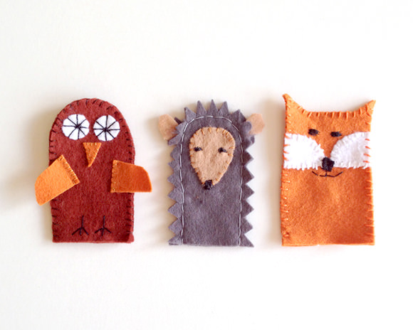
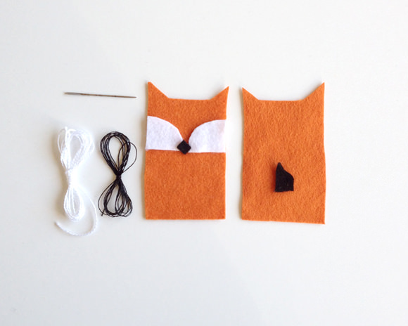
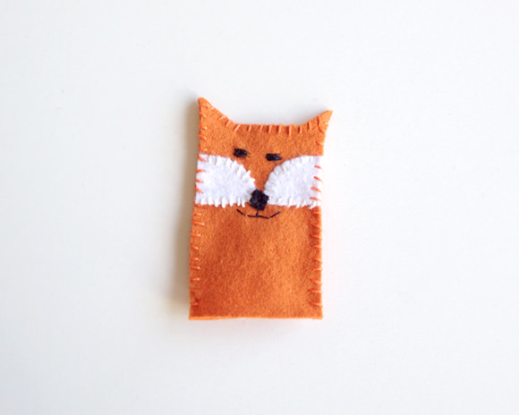

Here are a few of our most popular tutorials, with step by step instructions.
These projects are great to do with your kids!
Here’s an easy craft for beginner sewers—even kids can make these easy felt finger puppets!
Cut out the felt shapes.
Thread your needle and start embroidering the face: Stitch on the white felt fur, black nose, mouth, and eyes. On the second piece of orange felt sew on the tail.
Sew together the front and back pieces. Your fox finger puppet is ready for play!